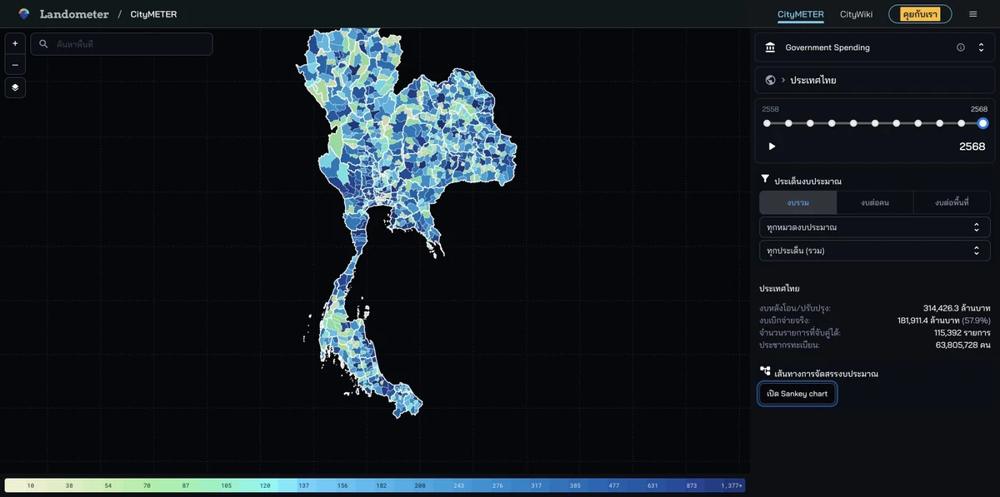

CityMETER · Living
งบประมาณและการเบิกจ่ายภาครัฐ
ตามเงินงบประมาณจากยอดจัดสรรถึงยอดเบิกจ่าย และเห็นว่ารายการที่มีพื้นที่อ้างอิงเชื่อมกับส่วนใดของประเทศ
เปิดข้อมูลบนแผนที่ ↗
เงินที่จัดสรรกับเงินที่ใช้ไป ตอบคนละคำถาม
ยอดงบประมาณหลังปรับเปลี่ยนช่วยมองขนาดเงินที่จัดสรร ส่วนยอดเบิกจ่ายช่วยติดตามการใช้เงิน ลองอ่านสองส่วนนี้ในปีงบประมาณเดียวกัน แล้วเลือกรายการที่อยากเข้าใจรายละเอียดโครงการต่อ
แผนที่แสดงเฉพาะรายการที่จับคู่พื้นที่ได้ เงินที่ใช้ไปยังไม่ใช่หลักฐานว่าบริการดีขึ้นหรือโครงการคุ้มค่า
ลองเริ่มจากสองคำถามนี้
- พื้นที่ที่สนใจมีรายการจัดสรรและเบิกจ่ายใดบ้าง?
- ยอดสองส่วนนี้ต่างกันอย่างไรในปีเดียวกัน?
ดูพื้นที่ที่คุณสนใจต่อ
ใช้รายการที่พบเป็นจุดเริ่มต้นอ่านเอกสารงบประมาณและติดตามผลโครงการกับหน่วยงานที่เกี่ยวข้อง
อ่านต่อจากต้นทาง
แหล่งอ้างอิง ช่วงเวลา และขอบเขตข้อมูล
ที่มายังมีส่วนที่ต้องยืนยัน
- ผู้เผยแพร่ข้อมูล
- ยังยืนยันหน่วยงานผู้เผยแพร่ข้อมูลต้นทางไม่ได้
- ที่มา
- ข้อมูลรายการงบประมาณและการเบิกจ่ายที่เชื่อมกับพื้นที่ได้ ยังต้องตรวจเอกสารต้นทางของรายการก่อนอ้างอิงหน่วยงานผู้เผยแพร่หรือยอดรวมประเทศ
- ช่วงเวลาของข้อมูล
- ปีงบประมาณ 2558–2568 ตามรายการที่มี; ความครบถ้วนของตำแหน่งต่างกันตามปี
- พื้นที่ครอบคลุม
- ปีงบประมาณ 2558–2568 ตามตัวเลือกที่มี; แผนที่แสดงส่วนที่จับคู่พื้นที่ได้
- ระดับรายละเอียด
- รายการงบหลังโอนเปลี่ยนแปลงและยอดเบิกจ่าย แยกตามปีและพื้นที่ที่จับคู่ได้
เมื่อจะนำข้อมูลไปเปรียบเทียบหรืออ้างอิง
รายการที่จับคู่พื้นที่ได้ไม่ใช่งบทั้งหมดของประเทศ การจัดสรรและเบิกจ่ายเป็นคนละขั้น และตัวเงินไม่บอกผลสำเร็จ คุณภาพบริการ หรือความคุ้มค่าโดยลำพัง
ร่วมพัฒนาโดย
 โต๋ร่วมพัฒนา
โต๋ร่วมพัฒนา

สแกนเพื่อเปิดข้อมูลนี้ใน CityMETERเปิดข้อมูลบนแผนที่ (เปิดแท็บใหม่)
แชร์สรุปนี้
ส่งให้คนที่กำลังศึกษาเรื่องนี้ด้วยกัน